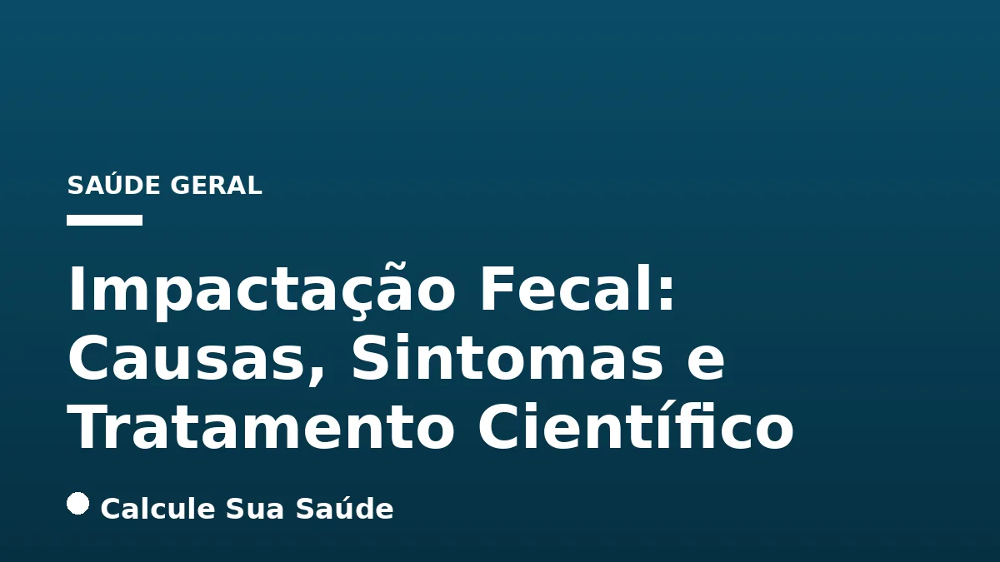

Aviso médico importante
Este conteúdo é educativo e informativo e não substitui a consulta, o diagnóstico ou o tratamento de um profissional de saúde. Em caso de sintomas, procure orientação médica.
Índice do Artigo
- 1. O Que é Impactação Fecal e o Fecaloma?
- 2. Epidemiologia e Populações de Risco
- 3. Causas e Fatores de Risco Detalhados
- 4. Sintomas da Impactação Fecal: Reconhecendo os Sinais
- 5. Sinais de Alerta e Quando Procurar Atendimento Médico Imediato
- 6. Diagnóstico Preciso: Ferramentas e Métodos
- 7. Prevenção da Impactação Fecal: Estratégias Baseadas em Evidências
- 8. Tratamentos da Impactação Fecal: Abordagens Baseadas em Evidências
- 9. Nível de Evidência dos Tratamentos
- 10. Mitos Comuns vs. O Que a Ciência Diz
- 11. Compreendendo as Complicações da Impactação Fecal
- 12. Abordagem Nutricional na Prevenção e Manejo
- 13. O Papel da Atividade Física e Mobilidade
- 14. Considerações Específicas em Idosos e Crianças
- 15. Prevenção de Recorrências e Monitoramento a Longo Prazo
- 16. Quando a Cirurgia é Necessária?
- 17. Impactação Fecal e a Saúde Mental
- 18. Perspectivas Futuras na Pesquisa e Tratamento
- 19. Conclusão: A Importância da Prevenção e do Manejo Atento
- 20. Perguntas frequentes
A impactação fecal representa uma condição gastrointestinal de relevância clínica, caracterizada pelo acúmulo de uma massa de fezes duras e secas no reto ou cólon, culminando em um bloqueio que impede a evacuação fisiológica. Conhecida também como fecaloma, essa condição pode gerar dor e desconforto consideráveis, e em cenários mais severos, demandar intervenção médica urgente. Embora seja um problema que pode afetar indivíduos de todas as idades, sua prevalência é notavelmente maior em populações específicas, como idosos, pacientes com incapacidades e aqueles em ambientes institucionalizados.
A compreensão aprofundada da impactação fecal é crucial para sua prevenção, diagnóstico precoce e tratamento eficaz. Este artigo, fundamentado em evidências científicas e diretrizes médicas atuais, visa desmistificar essa condição, abordando suas complexas etiologias, manifestações clínicas, métodos diagnósticos e as estratégias terapêuticas e preventivas mais recomendadas. Nosso objetivo é fornecer informações rigorosas para profissionais de saúde e para o público, reforçando a importância de uma abordagem proativa na manutenção da saúde intestinal.
É imperativo ressaltar que as informações aqui apresentadas têm caráter exclusivamente educativo e não substituem a avaliação, o diagnóstico ou o tratamento médico profissional. Em caso de suspeita de impactação fecal ou qualquer sintoma gastrointestinal persistente, a consulta com um médico é indispensável para um manejo adequado e individualizado.
Em resumo
- A impactação fecal é o acúmulo de fezes duras no reto ou cólon, bloqueando a evacuação normal.
- É frequentemente causada por constipação crônica, dieta pobre em fibras, hidratação inadequada, sedentarismo e certos medicamentos.
- Sintomas incluem dor abdominal, inchaço, incapacidade de evacuar, náuseas, vômitos e diarreia paradoxal.
- O diagnóstico envolve história clínica, exame retal digital e, por vezes, exames de imagem como radiografia ou TC.
- O tratamento varia de desimpactação manual e enemas a laxantes osmóticos como o polietilenoglicol (PEG).
- A prevenção é fundamental e inclui dieta rica em fibras, hidratação adequada, atividade física regular e manejo de condições subjacentes.
1. O Que é Impactação Fecal e o Fecaloma?
A impactação fecal, em sua essência, é uma forma avançada e grave de constipação. Ela se manifesta quando uma massa de fezes endurecidas e secas se acumula no reto ou em porções mais proximais do cólon, criando uma obstrução mecânica que impede a passagem normal do bolo fecal. Essa massa compactada é tecnicamente denominada fecaloma. A condição não é apenas um incômodo, mas uma emergência médica potencial que pode levar a complicações significativas se não for tratada adequadamente. A formação do fecaloma é um processo gradual, geralmente resultado de uma constipação crônica não gerenciada, onde a água é progressivamente reabsorvida das fezes, tornando-as extremamente duras e difíceis de expelir.
A distinção entre constipação comum e impactação fecal reside na severidade e na presença de um bloqueio físico. Enquanto a constipação pode ser caracterizada por evacuações infrequentes ou fezes duras, a impactação fecal implica uma obstrução completa ou quase completa, que o paciente não consegue resolver por conta própria. A compreensão dessa diferença é vital para o diagnóstico e tratamento corretos, evitando abordagens que seriam insuficientes para a gravidade da impactação.
2. Epidemiologia e Populações de Risco
A impactação fecal é um problema de saúde pública globalmente reconhecido, embora dados epidemiológicos específicos para o Brasil sejam escassos nas fontes pesquisadas. Contudo, é amplamente aceito que certas populações apresentam um risco significativamente maior de desenvolver essa condição. Os idosos, por exemplo, são particularmente vulneráveis devido a uma combinação de fatores, incluindo diminuição da mobilidade, alterações na dieta, uso de múltiplos medicamentos (polifarmácia) e uma redução natural da motilidade gastrointestinal associada ao envelhecimento.
Além dos idosos, pacientes incapacitados ou acamados, bem como aqueles institucionalizados em casas de repouso ou hospitais, também enfrentam um risco elevado. A imobilidade e a dependência para atividades diárias podem dificultar o acesso ao banheiro ou a resposta oportuna ao reflexo de evacuação, contribuindo para o acúmulo e endurecimento das fezes. Crianças também podem ser afetadas, frequentemente devido a fatores comportamentais, como a retenção voluntária de fezes, treinamento precoce para o uso do banheiro, mudanças na rotina ou dieta, e o uso de certos medicamentos. A identificação dessas populações de risco é crucial para a implementação de estratégias preventivas e de monitoramento ativo.
3. Causas e Fatores de Risco Detalhados
A impactação fecal raramente surge de forma isolada, sendo quase sempre o resultado de uma constipação prolongada e multifatorial. As causas e fatores de risco podem ser categorizados de forma abrangente para facilitar a compreensão e a intervenção.
Hábitos Alimentares e Estilo de Vida
- Dieta pobre em fibras: A ingestão insuficiente de frutas, vegetais, legumes e grãos integrais é um dos principais contribuintes. As fibras adicionam volume às fezes e retêm água, facilitando sua passagem. Uma dieta deficiente em fibras leva a fezes pequenas, duras e difíceis de evacuar.
- Hidratação inadequada: A falta de ingestão suficiente de líquidos, especialmente água, resseca as fezes, tornando-as mais densas e compactas. A água é essencial para manter a consistência ideal das fezes.
- Estilo de vida sedentário ou falta de atividade física: A imobilidade e a diminuição da atividade física podem retardar o trânsito intestinal. O movimento físico ajuda a estimular os músculos do intestino, promovendo a motilidade gastrointestinal. Para mais informações sobre os benefícios do movimento, veja nosso artigo sobre Caminhada: Benefícios para a Saúde e Quantos Passos Diários.
- Ignorar a vontade de evacuar: Retardar a evacuação quando o corpo sinaliza a necessidade pode levar ao acúmulo de fezes no reto. Quanto mais tempo as fezes permanecem no cólon, mais água é reabsorvida, tornando-as mais duras.
Medicamentos
Diversos medicamentos podem impactar a motilidade gastrointestinal, aumentando o risco de constipação e, consequentemente, de impactação fecal. Entre eles, destacam-se os opioides, que são potentes inibidores da motilidade intestinal. Outras classes incluem antiácidos contendo alumínio ou cálcio, antidepressivos (especialmente tricíclicos), bloqueadores dos canais de cálcio e preparações de ferro. O uso indiscriminado ou o abuso de laxantes, paradoxalmente, também pode levar à constipação crônica e à impactação, pois o corpo pode desenvolver dependência e perder sua resposta fisiológica à distensão colônica.
Condições Médicas Subjacentes
A constipação crônica é o principal fator de risco para a impactação fecal. No entanto, diversas outras condições médicas podem predispor um indivíduo a essa condição:
- Doenças neurológicas: Condições como Doença de Parkinson, esclerose múltipla, lesão medular e doença de Hirschsprung (que afeta os nervos do cólon) podem comprometer a coordenação dos movimentos intestinais.
- Doenças metabólicas: Hipotireoidismo, diabetes mellitus, uremia, porfiria e hipercalcemia podem afetar a função muscular e nervosa do trato gastrointestinal.
- Doenças autoimunes: Lúpus ou esclerodermia, que podem causar disfunção da motilidade gastrointestinal.
- Anormalidades anatômicas e funcionais anorretais: Megacólon (incluindo o associado à doença de Chagas), estenose retossigmoide, estenose anorretal, retocele, enterocele e disfunção do assoalho pélvico podem criar obstáculos físicos ou funcionais à evacuação.
- Doenças psiquiátricas: Condições como demência ou psicose podem afetar a percepção da necessidade de evacuar ou a capacidade de seguir rotinas de higiene. Para mais informações sobre como condições de saúde podem se manifestar, consulte nosso artigo sobre Déficit: Manifestações na Saúde Humana e Sistemas.
4. Sintomas da Impactação Fecal: Reconhecendo os Sinais
Os sintomas da impactação fecal podem ser variados e, por vezes, enganosos, dependendo da localização e do tamanho da massa fecal. É crucial estar atento a esses sinais, pois o reconhecimento precoce pode prevenir complicações graves.
Sintomas Comuns
- Dor abdominal intensa ou cólicas: Frequentemente descrita como uma dor constante ou intermitente, que pode ser difusa ou localizada.
- Inchaço e sensação de plenitude no abdômen: O acúmulo de fezes e gases pode causar distensão abdominal perceptível.
- Desconforto ou dor retal: Especialmente se a impactação estiver localizada no reto.
- Esforço ou incapacidade de evacuar: Apesar da sensação de urgência, o paciente pode ter grande dificuldade ou ser incapaz de eliminar as fezes.
- Evacuações infrequentes: Menos de três vezes por semana, ou ausência de evacuações por vários dias.
- Eliminação apenas de pequenas partículas duras de fezes: Indica que apenas o material mais líquido consegue passar pelo bloqueio.
- Náuseas e vômitos: Podem ocorrer devido à obstrução intestinal e ao acúmulo de conteúdo no trato digestivo superior.
- Perda de apetite e perda de peso: Consequência da náusea e do desconforto prolongado.
- Cansaço ou letargia: Sintomas sistêmicos de mal-estar geral.
- Diarreia paradoxal: Este é um sintoma característico e muitas vezes mal interpretado. Refere-se ao vazamento de fezes líquidas ao redor do bloqueio de fezes duras, o que pode ser erroneamente confundido com diarreia comum.
- Incontinência fecal: Resultante do vazamento incontrolável de fezes líquidas.
- Frequência urinária ou incontinência urinária por transbordamento: A massa fecal pode comprimir a bexiga, afetando a função urinária.
5. Sinais de Alerta e Quando Procurar Atendimento Médico Imediato
Embora a impactação fecal possa ser gerenciada em estágios iniciais, existem sinais de alerta que indicam a necessidade de atendimento médico urgente. Ignorar esses sintomas pode levar a complicações sérias e potencialmente fatais.
Sinais de Alerta Críticos
É crucial procurar atendimento médico imediato se você ou alguém que você conhece apresentar os seguintes sintomas:
- Dor abdominal intensa que não melhora: Uma dor persistente e excruciante pode indicar complicações como obstrução completa ou isquemia intestinal.
- Vômitos persistentes, especialmente se acompanhados de dor abdominal: Sugere um bloqueio significativo que impede a passagem do conteúdo gástrico.
- Sangue nas fezes ou sangramento retal: Pode ser um sinal de lesão na mucosa intestinal ou outras condições graves.
- Incapacidade de evacuar gases ou fezes por um longo período: Um sinal claro de obstrução intestinal completa.
- Sinais de desidratação: Boca seca, tontura ou confusão mental indicam uma desidratação grave que requer hidratação intravenosa.
- Taquicardia, respiração acelerada, febre, agitação ou confusão: Especialmente em idosos, esses podem ser sinais de sepse ou outras complicações sistêmicas graves decorrentes da impactação.
A prontidão na busca por ajuda médica é um fator determinante para um prognóstico favorável em casos de impactação fecal grave.
6. Diagnóstico Preciso: Ferramentas e Métodos
O diagnóstico rápido e preciso da impactação fecal é fundamental para aliviar os sintomas e prevenir complicações. O processo diagnóstico geralmente envolve uma combinação de avaliação clínica e exames complementares.
História Médica e Exame Físico
O médico iniciará com uma anamnese detalhada, questionando sobre os hábitos intestinais do paciente, dieta, histórico de constipação, uso de medicamentos e condições médicas preexistentes. Durante o exame físico, a palpação abdominal pode revelar distensão, sensibilidade ou, em alguns casos, a presença de uma massa fecal endurecida. Este passo inicial é crucial para direcionar a investigação.
Exame Retal Digital (ERD)
O Exame Retal Digital (ERD) é a ferramenta diagnóstica mais direta e frequentemente utilizada para confirmar a impactação fecal, especialmente quando localizada no reto. Um profissional de saúde insere um dedo enluvado e lubrificado no reto do paciente para palpar a presença de fezes duras e compactadas. Este exame pode não apenas confirmar a impactação, mas também avaliar a consistência e a localização aproximada do fecaloma.
Testes de Imagem
Quando o ERD não é conclusivo ou há suspeita de impactação em porções mais altas do cólon, ou ainda para avaliar possíveis complicações, exames de imagem são empregados:
- Radiografia abdominal: Uma radiografia simples do abdômen pode visualizar o acúmulo de fezes e gases, indicando a presença e a extensão da impactação.
- Tomografia Computadorizada (TC): A TC oferece uma imagem mais detalhada do abdômen e da pelve, permitindo uma melhor avaliação da massa fecal, sua localização exata e a exclusão de outras causas de obstrução intestinal, bem como a detecção de complicações como perfuração ou megacólon.
Colonoscopia
Após a resolução da impactação fecal, uma colonoscopia pode ser recomendada. Este procedimento endoscópico permite ao médico visualizar diretamente o interior do cólon e do reto, avaliando a causa subjacente da constipação crônica e excluindo anormalidades anatômicas, como estenoses, pólipos ou malignidades, que poderiam ter contribuído para a formação do fecaloma. A colonoscopia é uma ferramenta importante para a investigação etiológica a longo prazo.
7. Prevenção da Impactação Fecal: Estratégias Baseadas em Evidências
A prevenção é a abordagem mais eficaz contra a impactação fecal, focando na promoção de hábitos intestinais regulares e saudáveis. A implementação de mudanças no estilo de vida e o manejo adequado de condições subjacentes são pilares essenciais.
Dieta Rica em Fibras
Aumentar a ingestão de fibras alimentares é fundamental. As fibras adicionam volume às fezes, as tornam mais macias e facilitam seu trânsito pelo intestino. Recomenda-se uma ingestão de até 30g de fibra por dia, proveniente de fontes como frutas, vegetais, legumes e grãos integrais. É importante introduzir as fibras gradualmente para evitar desconforto abdominal e gases. Para entender melhor a importância de uma alimentação balanceada, considere revisar informações sobre Alimentos Ultraprocessados: Riscos e Identificação, que podem impactar negativamente a saúde intestinal.
Hidratação Adequada
Beber bastante água é crucial, especialmente ao aumentar a ingestão de fibras. A água é absorvida pelas fibras, formando um gel que amolece as fezes e facilita sua passagem. A desidratação é um fator de risco significativo para fezes duras e impactação.
Atividade Física Regular
A atividade física estimula a motilidade intestinal, ajudando a mover as fezes através do cólon. Um estilo de vida sedentário, por outro lado, pode retardar o trânsito intestinal. A incorporação de exercícios regulares, mesmo que moderados, como caminhadas diárias, pode fazer uma diferença substancial na regularidade intestinal.
Não Ignorar a Vontade de Evacuar
Estabelecer uma rotina para evacuar e responder prontamente ao reflexo de defecação é vital. Ignorar a vontade de ir ao banheiro permite que as fezes permaneçam no cólon por mais tempo, resultando em maior reabsorção de água e endurecimento.
Gerenciamento de Medicamentos
Pacientes que utilizam medicamentos conhecidos por causar constipação (como opioides, antidepressivos ou antiácidos) devem discutir com seu médico sobre alternativas, ajustes de dose ou a implementação de tratamentos de suporte, como o uso regular de laxantes formadores de volume ou amaciantes de fezes, sob orientação profissional. Para um acompanhamento geral da saúde, um Check-up Médico: Exames Essenciais por Idade pode ajudar a identificar e gerenciar riscos.
Tratar Condições Médicas Subjacentes
O manejo eficaz de doenças crônicas que contribuem para a constipação, como hipotireoidismo, diabetes ou doenças neurológicas, é um componente essencial da prevenção da impactação fecal. O controle dessas condições pode restaurar ou melhorar a função intestinal.
8. Tratamentos da Impactação Fecal: Abordagens Baseadas em Evidências
O tratamento da impactação fecal visa primeiramente remover o bloqueio e, subsequentemente, prevenir a recorrência. As abordagens terapêuticas variam de métodos mecânicos a farmacológicos, sempre sob supervisão médica.
Desimpactação Manual
Em casos de impactação grave, especialmente quando a massa fecal está acessível no reto, um profissional de saúde pode realizar a desimpactação manual. Este procedimento envolve a remoção cuidadosa das fezes impactadas com um dedo enluvado, geralmente após a aplicação de um anestésico tópico para minimizar o desconforto. É um método eficaz para alívio imediato, mas deve ser realizado por pessoal treinado para evitar lesões.
Enemas e Supositórios
Enemas e supositórios são frequentemente utilizados para amolecer e quebrar as fezes, facilitando sua eliminação. Enemas de óleo mineral, docusato ou sorbitol podem ser administrados para lubrificar e hidratar a massa fecal. Supositórios de glicerina ou bisacodil estimulam o reto, promovendo a evacuação. A escolha do tipo de enema ou supositório depende da avaliação clínica e da localização da impactação.
Laxantes
Os laxantes desempenham um papel crucial no tratamento e na prevenção da recorrência. A escolha do laxante deve ser individualizada:
- Laxantes osmóticos: Substâncias como o polietilenoglicol (PEG) ou o hidróxido de magnésio atuam atraindo água para o intestino, amolecendo as fezes e aumentando seu volume, o que estimula o movimento intestinal. Uma revisão Cochrane avaliou 10 ensaios clínicos randomizados (ECRs) comparando lactulose com PEG em 868 participantes (de 3 meses a 70 anos), mostrando maior frequência de evacuações semanais e melhora na dor abdominal para pacientes usando PEG.
- Laxantes estimulantes: Como o bisacodil ou senna, estimulam diretamente os músculos do intestino para promover a contração e a evacuação. Devem ser usados com cautela e por curtos períodos, pois o uso prolongado pode levar à dependência.
Soluções de Lavagem Oral
Em casos de impactação mais extensa ou quando outras medidas falham, soluções de lavagem oral, como o polietilenoglicol (PEG 4000 ou macrogol) contendo eletrólitos, podem ser utilizadas. Estas soluções são projetadas para limpar o cólon de forma eficaz, amolecendo e lavando as fezes impactadas. São frequentemente usadas na preparação para colonoscopias, mas também têm aplicação terapêutica na desimpactação.
Intervenção Cirúrgica
A intervenção cirúrgica para impactação fecal é rara e reservada para casos extremos com complicações graves, como peritonite secundária à perfuração do cólon, volvo ou obstrução intestinal completa que não responde a outras medidas. Nesses cenários, a cirurgia pode ser necessária para remover a massa fecal e reparar quaisquer danos ao intestino.
9. Nível de Evidência dos Tratamentos
A eficácia dos tratamentos para impactação fecal é respaldada por diversas pesquisas científicas. A medicina baseada em evidências é fundamental para guiar as melhores práticas clínicas.
Polietilenoglicol (PEG) vs. Lactulose
A superioridade do polietilenoglicol (PEG) em comparação com a lactulose para o tratamento da impactação fecal é bem documentada. Uma revisão Cochrane, que analisou 10 ensaios clínicos randomizados (ECRs) envolvendo 868 participantes (com idades entre 3 meses e 70 anos), demonstrou que o PEG resultou em uma maior frequência de evacuações semanais e uma melhora mais significativa na dor abdominal em comparação com a lactulose. Essa evidência de alta qualidade reforça o PEG como uma opção preferencial para muitos pacientes.
Evidências em Populações Pediátricas
Para crianças, a pesquisa ainda busca consolidar as melhores abordagens. Uma revisão sistemática recente (2025) indicou evidência de baixa qualidade para a comparação entre PEG e enema retal. Por outro lado, a evidência foi de qualidade moderada para a comparação entre PEG e PEG com picosulfato de sódio. Outras comparações apresentaram evidências de qualidade muito baixa, o que impede conclusões confiáveis e ressalta a necessidade de mais pesquisas robustas nessa faixa etária. Isso sublinha a importância de uma avaliação clínica cuidadosa e individualizada para cada criança.
10. Mitos Comuns vs. O Que a Ciência Diz
A impactação fecal, como muitas condições de saúde, é cercada por mitos que podem levar a equívocos e atrasos no tratamento adequado. É fundamental desmistificar essas crenças com base em evidências científicas.
Mito: Se há diarreia, não pode ser impactação fecal.
O que a ciência diz: Este é um dos mitos mais perigosos. A diarreia paradoxal, ou seja, o vazamento de fezes líquidas ao redor de uma massa fecal endurecida que está bloqueando o intestino, é um sintoma comum e característico da impactação fecal. As fezes líquidas conseguem passar pelo bloqueio, enquanto as fezes sólidas permanecem impactadas. Confundir essa diarreia com um quadro comum pode atrasar o diagnóstico e o tratamento, levando a complicações.
Mito: O uso frequente de laxantes resolve a constipação de forma definitiva.
O que a ciência diz: O abuso de laxantes, especialmente os estimulantes, pode, na verdade, agravar a constipação crônica e contribuir para a impactação fecal. O corpo pode desenvolver dependência dos laxantes, perdendo a capacidade de responder normalmente à distensão colônica e exigindo doses cada vez maiores para evacuar. Isso cria um ciclo vicioso que prejudica a função intestinal natural. O tratamento da constipação crônica e da impactação fecal deve focar nas causas subjacentes e em mudanças de estilo de vida, com o uso de laxantes sendo uma ferramenta temporária ou sob estrita orientação médica. Para um entendimento mais aprofundado sobre a constipação, leia nosso artigo sobre Constipação Intestinal: Causas, Diagnóstico e Tratamento.
11. Compreendendo as Complicações da Impactação Fecal
Embora a impactação fecal possa parecer uma condição simples de constipação, suas complicações podem ser graves e, em alguns casos, fatais. A compreensão dessas complicações reforça a importância do diagnóstico e tratamento precoces.
Complicações Locais
- Úlceras de pressão e necrose retal: A pressão contínua da massa fecal endurecida contra a parede do reto pode levar à formação de úlceras e, em casos extremos, à necrose do tecido.
- Obstrução intestinal: O fecaloma pode causar uma obstrução mecânica completa, impedindo a passagem de fezes e gases, o que pode levar a distensão abdominal, vômitos e dor intensa.
- Megacólon: A distensão crônica do cólon devido à obstrução pode levar ao megacólon, uma dilatação anormal do intestino grosso. Em casos graves, pode evoluir para megacólon tóxico, uma condição de risco de vida.
- Perfuração intestinal: A pressão excessiva ou a necrose da parede intestinal podem resultar em perfuração, levando à peritonite (inflamação da membrana que reveste o abdômen), uma emergência cirúrgica.
- Prolapso retal: O esforço excessivo e a pressão da massa fecal podem contribuir para o prolapso do reto.
- Hemorroidas e fissuras anais: O esforço para evacuar e a passagem de fezes duras podem agravar ou causar hemorroidas e fissuras anais.
Complicações Sistêmicas
- Sepse: A perfuração intestinal ou a translocação bacteriana através de uma parede intestinal comprometida pode levar a uma infecção sistêmica grave (sepse).
- Disfunção urinária: A compressão da bexiga pela massa fecal pode causar retenção urinária ou incontinência por transbordamento, aumentando o risco de infecções do trato urinário.
- Delirium e agitação: Especialmente em idosos e pacientes com demência, a dor, o desconforto e as alterações metabólicas associadas à impactação fecal podem precipitar ou agravar estados confusionais e agitação.
- Desidratação e desequilíbrio eletrolítico: Vômitos persistentes e a incapacidade de se alimentar adequadamente podem levar à desidratação e a distúrbios eletrolíticos.
A monitorização atenta e a intervenção rápida são cruciais para mitigar esses riscos e garantir a segurança do paciente.
12. Abordagem Nutricional na Prevenção e Manejo
A nutrição desempenha um papel central tanto na prevenção quanto no manejo da impactação fecal. Uma dieta equilibrada e rica em nutrientes específicos pode otimizar a função intestinal.
Fibras Alimentares: Solúveis e Insolúveis
A distinção entre fibras solúveis e insolúveis é importante. As fibras insolúveis (encontradas em grãos integrais, cascas de frutas e vegetais) aumentam o volume das fezes e aceleram o trânsito intestinal. As fibras solúveis (presentes em aveia, leguminosas, maçãs e frutas cítricas) absorvem água e formam um gel, amolecendo as fezes. Uma combinação adequada de ambos os tipos é ideal. A meta de 25-30 gramas de fibra por dia deve ser alcançada através de uma variedade de alimentos integrais, não apenas suplementos, sempre com aumento gradual para evitar gases e inchaço.
Hidratação Essencial
A ingestão de líquidos é tão crucial quanto a fibra. A água permite que as fibras funcionem adequadamente, formando um bolo fecal macio e fácil de passar. Recomenda-se a ingestão de 2 a 3 litros de líquidos por dia, preferencialmente água, a menos que haja restrições médicas. Sucos de frutas naturais (como ameixa ou maçã), que contêm sorbitol, podem ter um efeito laxativo suave.
Probióticos e Pré-bióticos
Embora não sejam um tratamento direto para a impactação fecal estabelecida, probióticos (microrganismos vivos benéficos) e pré-bióticos (fibras que alimentam esses microrganismos) podem contribuir para a saúde geral da microbiota intestinal e, consequentemente, para a regularidade intestinal. Uma microbiota saudável pode otimizar a motilidade e a consistência das fezes, prevenindo a constipação crônica que pode levar à impactação.
Evitar Alimentos que Agravam a Constipação
Alguns alimentos podem agravar a constipação em indivíduos sensíveis, como alimentos processados, ricos em gordura e pobres em fibras, laticínios em excesso e carnes vermelhas. A identificação e moderação desses alimentos na dieta, juntamente com a promoção de uma alimentação rica em vegetais, frutas e grãos integrais, são estratégias nutricionais importantes.
13. O Papel da Atividade Física e Mobilidade
A atividade física e a manutenção da mobilidade são componentes frequentemente subestimados, mas cruciais, na prevenção e no manejo da impactação fecal. O sedentarismo é um fator de risco bem estabelecido para a constipação crônica.
Estímulo da Motilidade Intestinal
O movimento físico, mesmo que leve, ajuda a estimular os músculos do trato gastrointestinal. A contração e relaxamento dos músculos abdominais e do assoalho pélvico durante a atividade física promovem o peristaltismo, que são as ondas de contração que impulsionam o conteúdo fecal através do cólon. Em indivíduos acamados ou com mobilidade reduzida, essa estimulação natural é ausente, o que contribui para o acúmulo e endurecimento das fezes.
Tipos de Atividade Física Recomendados
Não é necessário realizar exercícios de alta intensidade para obter benefícios. Atividades aeróbicas moderadas, como caminhada rápida, natação, ciclismo leve ou dança, por pelo menos 30 minutos na maioria dos dias da semana, podem ser muito eficazes. Para idosos ou pessoas com limitações físicas, exercícios de baixo impacto, como caminhadas curtas e regulares, alongamentos e exercícios de mobilidade na cama ou cadeira, são igualmente benéficos. A consistência é mais importante do que a intensidade.
Impacto da Imobilidade
Em pacientes hospitalizados ou institucionalizados, a imobilidade prolongada é um fator de risco significativo para a impactação fecal. Nesses casos, a equipe de saúde deve implementar protocolos de mobilização precoce, quando clinicamente possível, e considerar intervenções profiláticas, como a administração de laxantes, para prevenir a constipação. A reabilitação e a fisioterapia podem desempenhar um papel vital na restauração da mobilidade e, consequentemente, na melhoria da função intestinal.
14. Considerações Específicas em Idosos e Crianças
A impactação fecal apresenta particularidades em faixas etárias extremas, exigindo abordagens específicas e um olhar atento para os fatores de risco e sintomas.
Idosos
Os idosos são a população de maior risco para impactação fecal. Isso se deve a uma confluência de fatores:
- Diminuição da mobilidade: Redução da atividade física e tempo prolongado na cama ou cadeira.
- Polifarmácia: Uso de múltiplos medicamentos, muitos dos quais têm a constipação como efeito colateral (opioides, antidepressivos, anti-hipertensivos).
- Alterações dietéticas: Redução da ingestão de fibras e líquidos devido a problemas dentários, disfagia ou perda de apetite.
- Doenças crônicas: Maior prevalência de condições como diabetes, hipotireoidismo, doenças neurológicas (Parkinson, demência) que afetam a motilidade intestinal.
- Fraqueza muscular: Redução da força dos músculos abdominais e do assoalho pélvico, dificultando a evacuação.
- Perda do reflexo de defecação: Ocorre uma diminuição da sensibilidade retal, levando à retenção fecal.
O manejo em idosos requer uma abordagem multifacetada, incluindo revisão de medicamentos, otimização da dieta e hidratação, programas de mobilidade e, quando necessário, intervenções laxativas suaves e regulares. A educação de cuidadores é fundamental.
Crianças
Em crianças, a impactação fecal é frequentemente associada à constipação funcional crônica e à retenção de fezes. Os fatores incluem:
- Hábitos alimentares: Dietas pobres em fibras e líquidos.
- Problemas comportamentais: Medo de evacuar (devido a uma experiência dolorosa anterior), retenção voluntária de fezes para evitar o banheiro ou por brincar.
- Treinamento precoce para o uso do banheiro: Pressão para o desfralde pode levar à retenção.
- Mudanças na rotina ou dieta: Viagens, início da escola, ou introdução de novos alimentos.
- Certos medicamentos: Como alguns antialérgicos ou antidepressivos.
O tratamento em crianças geralmente começa com a desimpactação, seguida por um regime de manutenção com laxantes osmóticos (como PEG), mudanças dietéticas, aumento da hidratação e, crucialmente, terapia comportamental para abordar o medo e a retenção. A paciência e o apoio dos pais são essenciais para o sucesso do tratamento.
15. Prevenção de Recorrências e Monitoramento a Longo Prazo
Após a resolução de um episódio de impactação fecal, o foco principal deve ser a prevenção de recorrências. Isso exige um plano de manejo a longo prazo que integre mudanças no estilo de vida, monitoramento contínuo e, em alguns casos, terapia farmacológica de manutenção.
Plano de Cuidados Individualizado
Cada paciente necessita de um plano de cuidados individualizado, elaborado em conjunto com o médico. Este plano deve abordar os fatores de risco específicos que contribuíram para a impactação. Por exemplo, se a causa foi a polifarmácia, o médico pode revisar a medicação. Se foi a dieta, um nutricionista pode ser envolvido para orientar sobre o aumento da ingestão de fibras e líquidos.
Manutenção da Regularidade Intestinal
A chave para prevenir a recorrência é manter a regularidade intestinal. Isso geralmente envolve:
- Dieta rica em fibras: Continuar com uma ingestão adequada de frutas, vegetais e grãos integrais.
- Hidratação consistente: Beber água suficiente ao longo do dia.
- Atividade física regular: Manter-se ativo para estimular o trânsito intestinal.
- Rotina de evacuação: Tentar evacuar em horários regulares, preferencialmente após as refeições, e não ignorar a vontade de ir ao banheiro.
Uso de Laxantes de Manutenção
Em muitos casos, especialmente em idosos ou pacientes com condições crônicas, pode ser necessário o uso contínuo de laxantes de manutenção, como os laxantes formadores de volume (psyllium) ou osmóticos (PEG), em doses menores. Estes devem ser utilizados sob orientação médica para evitar dependência ou efeitos adversos. O objetivo é manter as fezes macias e fáceis de passar, sem causar diarreia ou desconforto.
Monitoramento e Sinais de Alerta
Pacientes e cuidadores devem ser educados sobre os sinais precoces de constipação ou recorrência de impactação. A observação de mudanças nos hábitos intestinais, diminuição da frequência de evacuações, fezes mais duras ou desconforto abdominal deve levar à intervenção precoce. O acompanhamento médico regular é essencial para ajustar o plano de manejo conforme necessário e para investigar quaisquer novas preocupações.
16. Quando a Cirurgia é Necessária?
A intervenção cirúrgica para impactação fecal é uma medida de último recurso, reservada para situações em que outras abordagens conservadoras falharam ou quando complicações graves e potencialmente fatais se desenvolveram. É crucial entender que a cirurgia não é a primeira linha de tratamento e é considerada apenas em cenários muito específicos.
Indicações para Cirurgia
As principais indicações para a cirurgia em casos de impactação fecal incluem:
- Obstrução intestinal completa refratária: Quando a massa fecal causa uma obstrução total que não pode ser resolvida por desimpactação manual, enemas, laxantes ou lavagens orais.
- Perfuração do cólon: Uma das complicações mais graves, onde a pressão do fecaloma ou a necrose da parede intestinal leva a uma ruptura, resultando em peritonite (inflamação grave da cavidade abdominal). Esta é uma emergência cirúrgica que exige reparo imediato.
- Megacólon tóxico: Uma dilatação extrema do cólon associada à toxicidade sistêmica, que pode ocorrer em casos de impactação prolongada e grave.
- Isquemia intestinal: Quando o suprimento sanguíneo para uma parte do intestino é comprometido devido à pressão ou distensão excessiva, levando à lesão tecidual.
- Fecaloma gigante ou recorrente: Em raras situações, fecalomas de tamanho extraordinário ou episódios de impactação que se repetem apesar de um manejo clínico otimizado podem levar à consideração cirúrgica para remoção da massa ou correção de anormalidades anatômicas subjacentes.
Tipos de Procedimentos Cirúrgicos
Os procedimentos cirúrgicos podem variar dependendo da complicação e da localização da impactação. Podem incluir a remoção manual do fecaloma sob anestesia (quando não possível sem), ou ressecção de uma porção do cólon danificada ou obstruída. Em alguns casos, pode ser necessária a criação de uma ostomia temporária ou permanente (colostomia) para desviar o fluxo fecal e permitir a cicatrização do intestino.
É fundamental que a decisão pela cirurgia seja tomada por uma equipe multidisciplinar, após uma avaliação exaustiva e considerando os riscos e benefícios para o paciente.
17. Impactação Fecal e a Saúde Mental
A relação entre a saúde gastrointestinal e a saúde mental é cada vez mais reconhecida, e a impactação fecal não é exceção. Esta condição pode ter um impacto significativo no bem-estar psicológico e, inversamente, certas condições psiquiátricas podem ser fatores de risco.
Impacto Psicológico da Impactação Fecal
Viver com impactação fecal pode ser extremamente angustiante. A dor crônica, o desconforto abdominal, a incontinência fecal e a incapacidade de controlar as evacuações podem levar a:
- Ansiedade e estresse: A preocupação constante com os sintomas e a possibilidade de um episódio de incontinência podem gerar altos níveis de ansiedade.
- Depressão: A perda de qualidade de vida, o isolamento social e a frustração com a condição podem contribuir para o desenvolvimento ou agravamento da depressão.
- Vergonha e constrangimento: A incontinência fecal e o odor associado podem causar grande vergonha e levar ao isolamento social.
- Déficit cognitivo: Em idosos, a dor, o desconforto e as alterações metabólicas podem exacerbar o delirium e a confusão mental.
Condições Psiquiátricas como Fatores de Risco
Algumas condições psiquiátricas podem aumentar o risco de impactação fecal:
- Demência e psicose: Pacientes com essas condições podem ter dificuldade em reconhecer e responder aos sinais do corpo para evacuar, podem ter acesso limitado ao banheiro ou podem não conseguir comunicar seu desconforto.
- Transtornos alimentares: Podem levar a dietas restritivas e desequilibradas, contribuindo para a constipação.
- Depressão e ansiedade: Podem afetar a motilidade intestinal e o estilo de vida, levando ao sedentarismo e à má alimentação. Para entender melhor os sintomas de ansiedade, consulte Ansiedade: Sintomas e Quando Procurar Ajuda.
É fundamental que a abordagem da impactação fecal seja holística, considerando tanto os aspectos físicos quanto os psicológicos. O apoio psicológico e a educação podem ser componentes importantes do plano de tratamento, ajudando os pacientes a lidar com o impacto emocional da condição e a melhorar sua adesão ao tratamento.
18. Perspectivas Futuras na Pesquisa e Tratamento
A pesquisa na área de gastroenterologia continua a avançar, buscando novas e mais eficazes estratégias para a prevenção e o tratamento da impactação fecal. As perspectivas futuras incluem o aprofundamento do entendimento dos mecanismos fisiopatológicos e o desenvolvimento de terapias inovadoras.
Novas Abordagens Farmacológicas
O desenvolvimento de novos agentes farmacológicos que atuam em diferentes vias da motilidade intestinal é uma área promissora. Isso inclui agonistas de receptores específicos que podem aumentar a secreção de fluidos no intestino ou estimular o peristaltismo de forma mais direcionada, com menos efeitos colaterais do que os laxantes tradicionais. A pesquisa em modulação da microbiota intestinal, através de probióticos específicos ou transplante de microbiota fecal, também pode oferecer novas estratégias para a constipação crônica e, consequentemente, para a prevenção da impactação.
Tecnologias de Diagnóstico Avançadas
Melhorias nas técnicas de imagem e nos testes funcionais podem levar a um diagnóstico mais preciso e precoce da impactação, especialmente em casos atípicos ou em populações vulneráveis. A utilização de inteligência artificial e aprendizado de máquina para analisar dados clínicos e de imagem pode ajudar a identificar pacientes em risco e a prever a resposta a diferentes tratamentos.
Intervenções Não Farmacológicas
A pesquisa sobre a eficácia de intervenções não farmacológicas, como biofeedback para disfunção do assoalho pélvico, programas de exercícios personalizados e abordagens nutricionais mais refinadas, continua a expandir. A integração de tecnologias vestíveis (wearables) para monitorar a atividade física e a hidratação pode oferecer ferramentas para a prevenção proativa da constipação.
Educação e Conscientização
Um foco contínuo na educação de pacientes, cuidadores e profissionais de saúde sobre a impactação fecal é vital. A conscientização sobre os fatores de risco, sintomas e a importância da intervenção precoce pode reduzir a incidência de casos graves e melhorar os resultados. A pesquisa também se concentra em como melhor comunicar essas informações para diferentes públicos, garantindo que o conhecimento científico se traduza em práticas de saúde eficazes.
19. Conclusão: A Importância da Prevenção e do Manejo Atento
A impactação fecal é uma condição séria que, embora comum, é frequentemente subestimada em suas implicações para a saúde. Como detalhado neste artigo, sua etiologia é multifatorial, envolvendo desde hábitos de vida e uso de medicamentos até complexas condições médicas subjacentes. Os sintomas podem ser variados e, por vezes, enganosos, como a diarreia paradoxal, o que ressalta a importância de um diagnóstico preciso e precoce.
A prevenção emerge como a estratégia mais eficaz, baseada em pilares como uma dieta rica em fibras, hidratação adequada, atividade física regular e a atenção aos sinais do corpo. Para aqueles que já desenvolveram a condição, as opções de tratamento são diversas, variando de desimpactação manual e enemas a laxantes osmóticos, com o polietilenoglicol (PEG) demonstrando eficácia superior em estudos clínicos. A intervenção cirúrgica é rara e reservada para complicações graves.
É imperativo que pacientes e cuidadores estejam cientes dos sinais de alerta e busquem atendimento médico imediato quando necessário. A gestão a longo prazo, focada na prevenção de recorrências e no monitoramento contínuo, é crucial para garantir a qualidade de vida e evitar complicações. A saúde intestinal é um reflexo do bem-estar geral, e a abordagem da impactação fecal deve ser sempre holística e baseada em evidências científicas.
20. Perguntas frequentes
O que é impactação fecal?
A impactação fecal é uma forma grave de constipação, onde uma massa de fezes duras e secas se acumula no reto ou cólon, criando um bloqueio que impede a evacuação normal. Essa massa é conhecida como fecaloma e pode causar dor e desconforto significativos.
Quais são os principais sintomas da impactação fecal?
Os sintomas comuns incluem dor abdominal intensa, inchaço, incapacidade de evacuar, náuseas, vômitos, perda de apetite e cansaço. Um sintoma característico é a diarreia paradoxal, que é o vazamento de fezes líquidas ao redor do bloqueio.
Quem está em maior risco de desenvolver impactação fecal?
Idosos, pacientes com mobilidade reduzida ou incapacitados, e aqueles em ambientes institucionalizados são as populações de maior risco. Crianças também podem ser afetadas devido a fatores comportamentais e dietéticos.
Como a impactação fecal é diagnosticada?
O diagnóstico envolve uma história médica detalhada, exame físico, incluindo o exame retal digital (ERD) para palpar a massa fecal. Testes de imagem como radiografia abdominal ou tomografia computadorizada (TC) podem ser usados para confirmar e avaliar a extensão.
Quais são os tratamentos eficazes para impactação fecal?
Os tratamentos incluem desimpactação manual por um profissional de saúde, uso de enemas ou supositórios para amolecer as fezes, e laxantes osmóticos como o polietilenoglicol (PEG). Em casos raros e graves, a intervenção cirúrgica pode ser necessária.
É possível prevenir a impactação fecal?
Sim, a prevenção é crucial. Inclui uma dieta rica em fibras (até 30g/dia), hidratação adequada (beber bastante água), atividade física regular, não ignorar a vontade de evacuar e o manejo adequado de medicamentos e condições médicas subjacentes.
O uso de laxantes pode causar impactação fecal?
Paradoxalmente, o abuso de laxantes, especialmente os estimulantes, pode contribuir para a constipação crônica e a impactação fecal a longo prazo. O corpo pode se tornar dependente, perdendo sua capacidade natural de evacuar e exigindo doses cada vez maiores.
Quais são os sinais de alerta que exigem atendimento médico imediato?
Procure atendimento urgente se houver dor abdominal intensa que não melhora, vômitos persistentes, sangue nas fezes, incapacidade de evacuar gases ou fezes por um longo período, sinais de desidratação, taquicardia, febre ou confusão.
Leia também
Referências e Fontes
1. Apollo Hospitals. Impactação fecal - Causas, sintomas, diagnóstico e tratamento. Disponível em: vertexaisearch.cloud.google.com
2. Medicover Hospitals. Impactação fecal: sintomas, causas e tratamentos. Disponível em: medicoverhospitals.in
3. National Institutes of Health (NIH). Fecal Impaction: A Cause for Concern?. Disponível em: pmc.ncbi.nlm.nih.gov
4. DR. DERIVAL AFONSO. Impactação fecal em adultos. Disponível em: drderival.com
5. National Institutes of Health (NIH). Fecal Impaction - PMC. Disponível em: pmc.ncbi.nlm.nih.gov
6. PubMed. Fecal impaction: a systematic review of its medical complications. Disponível em: pmc.ncbi.nlm.nih.gov
7. Veja Saúde - Assine Abril. Fecaloma: o que é, como prevenir e tratar o problema. Disponível em: saude.abril.com.br